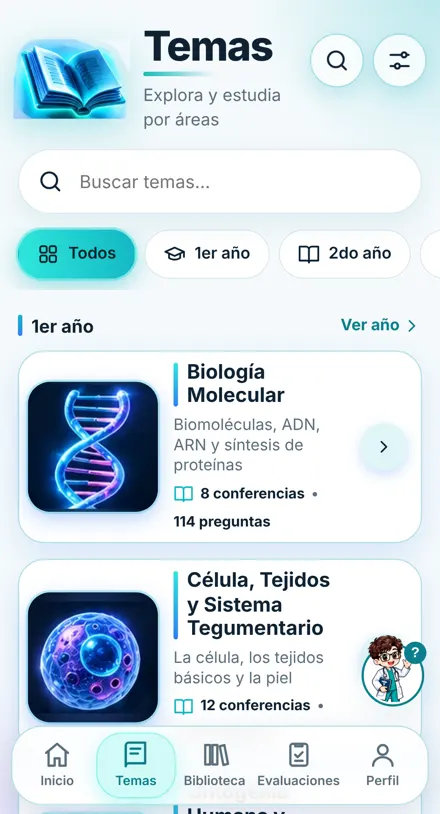
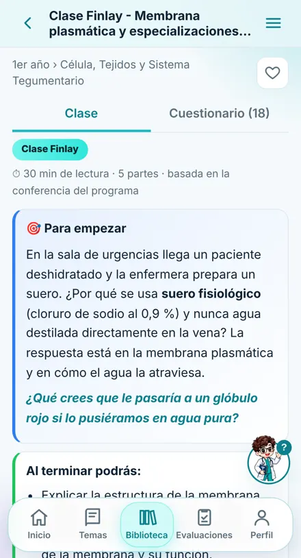
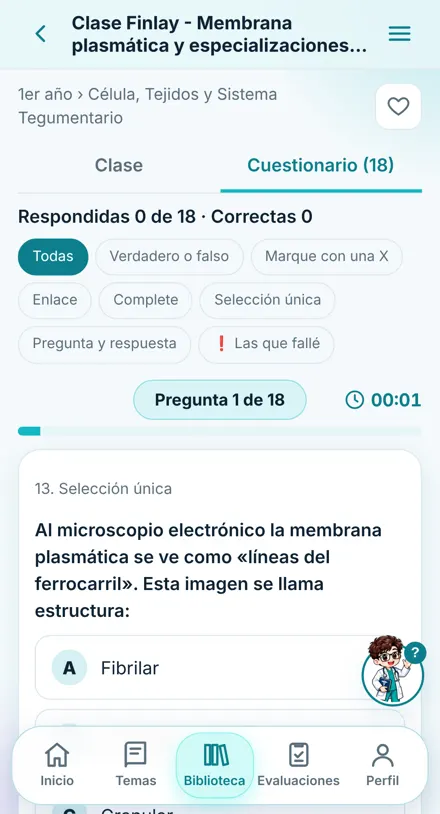
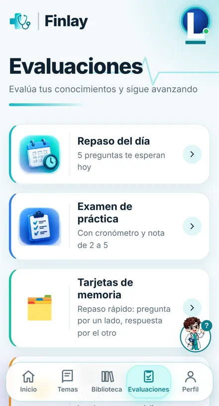
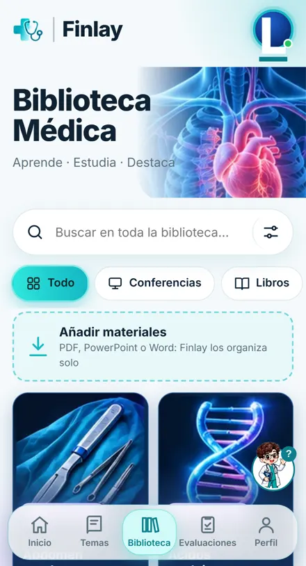
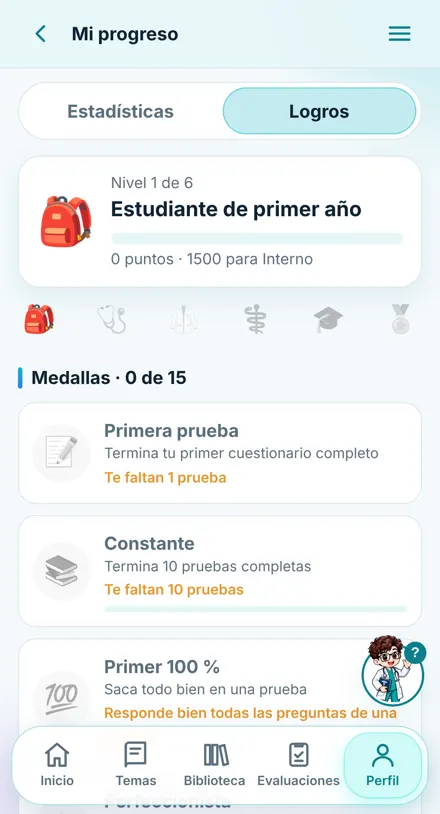

Finlay pone toda la carrera en tu teléfono: las clases de 1ro a 5to año, cuestionarios como los del examen y pruebas en grupo con tus compañeros. Sin gastar datos.
Finlay nació para un problema concreto: la conexión falla, los materiales andan regados en chats y memorias, y cada grupo estudia en un lugar distinto.
Organizadas por año y asignatura según el plan de estudio, numeradas como se estudian y explicadas paso a paso.
Verdadero o falso, selección, enlazar y completar, como en el examen. Cada respuesta viene explicada.
Con cronómetro y nota de 2 a 5. Lo que fallas vuelve en el repaso del día hasta que lo domines.
Manda la prueba por WhatsApp o Zapya y empiecen todos a la misma hora. Finlay arma la tabla de notas.
Añade tus PDF, Word y PowerPoint. Se ven con su formato original y Finlay les crea un cuestionario.
Puntos, niveles y medallas que te animan a estudiar un poco cada día.
Desliza para ver algunas pantallas.






Un vistazo rápido a lo que hace la aplicación.
Elige tu teléfono.
También puedes usarla desde el navegador con el botón «Abrir Finlay».